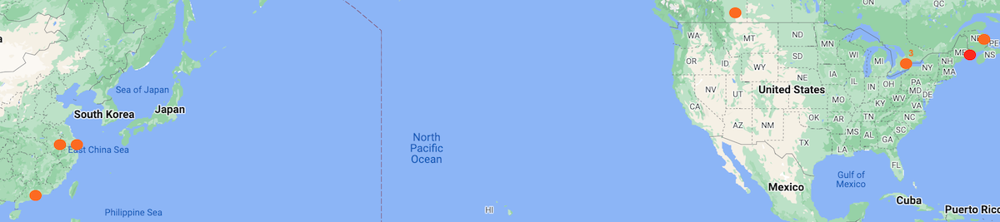
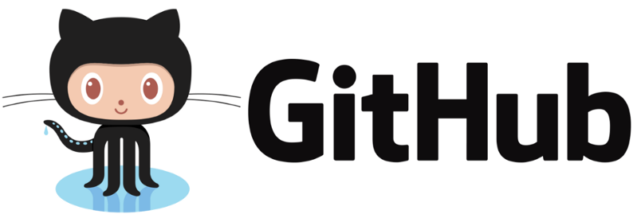
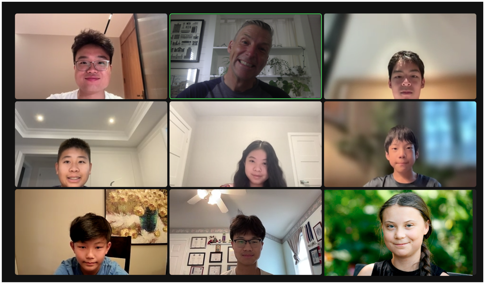

You can expect to learn basic programming with Python and use Python Pandas to clean, prepare and analyse data. Students will use the Titanic data set to determine if women and children really did get on the life boats first. Students will also indulge their creativity by writing out their analysis to a graphical web page with an SVG graphic. Their Python generated web analysis will be hosted on Github and distributed to the WWW using free Github Pages. Finally, students will be introduced to a big dataset of 5 million sales records to demonstrate how Python and Pandas can quickly analyse data too big for a spreadsheet program.
Mr. Hoel taught computer science and worked in software for 30 years. He is now mostly retired and enjoying teaching small numbers of students on zoom.
Daily notes
Day 1
Objecives
In this class, you can expect to learn how this course will work, where to store you work locally and online and how to get started programming Python using the Idle code editor.
Process
Welcome and get to know your teacher and classmates
What hardware do you have? Did you download Python 3.11.4? Do you have a Github account?
Files and folder organization (where will I store my files?)
Making my first 'Hello World' program with Idle source code editor
Learn basic Python syntax and language by making a short program
Homework: Upgrade your program to look good and add functionality. Show and tell tomorrow.
Teacher summary
Great to meet 8 wonderful students from around the world! Special thanks to Elva for getting up at 6 to be with us from the Mountain time zone in North America :-) Also, thanks to Aaron, William and KC for their excellent participation. Today we learned the basics of data types, variables, data type casting using int() and str(). Basic math operations and string concatenation was introduced. We also learned about using built in Python functions like print(), round() and input(). Finally, we built a short program using if, elif, else statements to receive data from a user and send them back information based on their input.
I look forward to seeing your upgrades to the simple program we made today in tomorrow's class.

Day 2
Objecives
In this class, you can expect to review basic programming concepts using Python and learn how to use repetition and modularization to make more involved programs that are easier to read and debug as well as reusable. You will also learn the 3 categories of errors you will encounter when programming.
Process
Questions from Day 1
Show and tell time. Who wants to show off their homework?!
Create a function that incorporates repetition and a list variable
Upload day1 and day2 code to Github
Homework: Upgrade your program to look good and add functionality. Show and tell tomorrow.
Teacher summary
Today we learned some tough concepts. We examined how to create a function that receives data and returns a value, reviewed the list data type, as well as looking at 2 types of for loops and a while loop. At the end of class I assigned uploading your day1.py and day2.py to Github. I will check your Github accounts for homework. If you are having trouble, please contact me (mdjhoel@gmail.com).

Day 3
Objecives
In this class, you can expect to review functions, lists and looping in Python. You will also learn how to use file input and out in Python and work with our titanic dataset. You will also learn the 3 categories of errors you will encounter when programming (syntax, run time and logic).
Process
Questions from Day 2
Please send me your github handle in the chat.
Review functions, lists, for and while loops.
Intro to file input (open(), readlines(), close()) using titanic.csv
Create a function that incorporates repetition and a list variable
Upload day3 code to Github
Homework: Upgrade your program to look good and add functionality. Show and tell tomorrow.
Teacher summary
Today we did quite a bit of review using the Python shell. Afterwards we got to work and finally got to play with the Titanic data. We learned how to open, use readlines() to transfer file data into a list and close the file. We also learned how to explore the data by using list indexes. Lastly we created a custom function to pass in a list and a number and print out data. We were able to use the .split() function to convert our string data into a temporary list and create better output for our users. If any of this is confusing, please contact me (mdjhoel@gmail.com).
I'd like to recognize our super participants: Aaron, KC and William today. I encourage everyone to get involved, ask questions and make mistakes. We are a friend community and participating is the best way to learn.
Day 4
Objecives
In this class, you can expect to review file input, for loops and functions. New topics include how to use a game loop (while) and the input() function to create a user interface. You can also expect to learn how to create an algorithm to calculate the number of kids that survived the Titanic disaster.
Process
Questions from Day 3
Please send me your github handle in the chat. I forgot to record last class!
Review file input, functions and for loops.
Use a while loop and input() to create a user interface
Create a sequential search function to calculate % of kids that survived the Titanic
Upload day4 code to Github
Homework: Upgrade your program to look good and add functionality. Show and tell tomorrow.
Teacher summary
We started with a Python shell review of the split() built in function and defining and calling functions. The main event was opening the titanic.csv file and building an algorithm to determine the number of kids (under 16) that survived the tragedy. Our algorithm was pretty straight forward, but implementing it in Python required multiple steps of debugging and making sure all our data types worked well together.
I want to thank all the superstar code debuggers and uber participants today. Shout outs to Aaron, KC, William, Daniel and Sam.

Day 4
Objecives
In this class, you can expect to review data type casting (str(), int(), float) and our kids algorithm. New topics include creaing an general algorithm to solve the question of Women and Children first. Finally, we will add a game loop (while) and the input() function to create a user interface.
Process
Questions from Day 4
Review data type casting and other built in functions.
Use a while loop and input() to create a user interface for kids algorithm.
Create a general algorithm to calculate % of men and women that survived the Titanic
Upload day5 code to Github
Homework: Upgrade your program to look good and add functionality. Show and tell tomorrow.